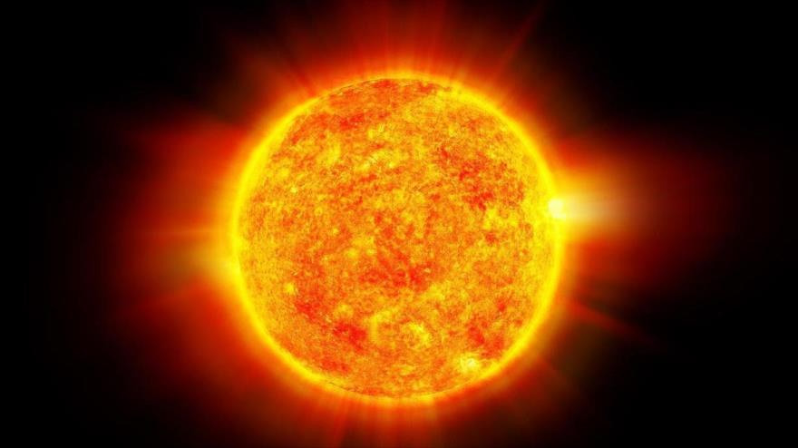
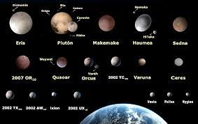

El sistema solar1 es el sistema planetario que liga gravitacionalmente a un conjunto de objetos astronómicos que giran directa o indirectamente en una órbita alrededor de una única estrella conocida con el nombre de Sol.2 La estrella concentra el 99,86 % de la masa del sistema solar,345 y la mayor parte de la masa restante se concentra en ocho planetas cuyas órbitas son prácticamente circulares y transitan dentro de un disco casi llano llamado plano eclíptico.6 Los cuatro planetas más cercanos, considerablemente más pequeños, Mercurio, Venus, Tierra y Marte, también conocidos como los planetas terrestres, están compuestos principalmente por roca y metal.78 Mientras que los cuatro más alejados, denominados gigantes gaseosos o «planetas jovianos», más masivos que los terrestres, están compuestos de hielo y gases. Los dos más grandes, Júpiter y Saturno, están compuestos principalmente de helio e hidrógeno. Urano y Neptuno, denominados gigantes helados, están formados mayoritariamente por agua congelada, amoniaco y metano.9 Concepción artística de un disco protoplanetario El Sol es el único cuerpo celeste del sistema solar que emite luz propia,10 debido a la fusión termonuclear del hidrógeno y su transformación en helio en su núcleo.11El sistema solar se formó hace unos 4600 millones de años121314 a partir del colapso de una nube molecular. El material residual originó un disco circunestelar protoplanetario en el que ocurrieron los procesos físicos que llevaron a la formación de los planetas.10El sistema solar se ubica en la actualidad en la nube Interestelar Local que se halla en la Burbuja Local del brazo de Orión, de la galaxia espiral Vía Láctea, a unos 28 000 años luz del centro de esta.15 Concepción artística del sistema solar y las órbitas de sus planetas El sistema solar es también el hogar de varias regiones compuestas por objetos pequeños. El cinturón de asteroides, ubicado entre Marte y Júpiter, es similar a los planetas terrestres ya que está constituido principalmente por roca y metal. En este cinturón se encuentra el planeta enano Ceres. Más allá de la órbita de Neptuno están el cinturón de Kuiper, el disco disperso y la nube de Oort, que incluyen objetos transneptunianos formados por agua, amoníaco y metano principalmente. En este lugar existen cuatro planetas enanos: Haumea, Makemake, Eris y Plutón, el cual fue considerado el noveno planeta del sistema solar hasta 2006. Este tipo de cuerpos celestes ubicados más allá de la órbita de Neptuno son también llamados plutoides, los cuales junto a Ceres, poseen el suficiente tamaño para que se hayan redondeado por efectos de su gravedad, pero que se diferencian principalmente de los planetas porque no han vaciado su órbita de cuerpos vecinos.16 Adicionalmente a los miles de objetos pequeños de estas dos zonas, algunas docenas de los cuales son candidatos a planetas enanos, existen otros grupos como cometas, centauros y polvo cósmico que viajan libremente entre regiones. Seis planetas y cuatro planetas enanos poseen satélites naturales. El viento solar, un flujo de plasma del Sol, crea una burbuja de viento estelar en el medio interestelar conocido como heliosfera, la que se extiende hasta el borde del disco disperso. La nube de Oort, la cual se cree que es la fuente de los cometas de período largo, es el límite del sistema solar y su borde está ubicado a un año luz desde el Sol.17 A principios del año 2016, se publicó un estudio según el cual puede existir un noveno planeta en el sistema solar, al que dieron el nombre provisional de Phattie.18 Se estima que el tamaño de Phattie sería entre el de Neptuno y la Tierra y que el hipotético planeta sería de composición gaseosa.
El Sol es la estrella única y central del sistema solar; por tanto, es la estrella más cercana a la Tierra y el astro con mayor brillo aparente. Su presencia o su ausencia en el cielo terrestre determinan, respectivamente, el día y la noche. La energía radiada por el Sol es aprovechada por los seres fotosintéticos, que constituyen la base de la cadena trófica, y es por ello la principal fuente de energía de la vida. También aporta la energía que mantiene en funcionamiento los procesos climáticos. El Sol es una estrella que se encuentra en la fase denominada secuencia principal, con un tipo espectral G2, que se formó hace unos 5000 millones de años, y permanecerá en la secuencia principal aproximadamente otros 5000 millones de años. A pesar de ser una estrella mediana, es la única cuya forma circular se puede apreciar a simple vista, con un diámetro angular de 32′35″ de arco en el perihelio y 31′31″ en el afelio, lo que da un diámetro medio de 32′03″. Casualmente, la combinación de tamaños y distancias del Sol y la Luna respecto a la Tierra, hace que se vean aproximadamente con el mismo tamaño aparente en el cielo. Esto permite una amplia gama de eclipses solares distintos (totales, anulares o parciales). Se han descubierto sistemas planetarios que tienen más de una estrella central (sistema estelar).
Los ocho planetas que componen el sistema solar son, de menor a mayor distancia respecto al Sol, los siguientes: Mercurio, Venus, Tierra, Marte, Júpiter, Saturno, Urano y Neptuno. Los planetas son cuerpos que giran formando órbitas alrededor de la estrella, tienen suficiente masa para que su gravedad supere las fuerzas del cuerpo rígido, de manera que asuman una forma en equilibrio hidrostático (prácticamente esférica), y han limpiado la vecindad de su órbita de planetesimales (dominancia orbital). Los planetas interiores son Mercurio, Venus, la Tierra y Marte y tienen la superficie sólida. Los planetas exteriores son Júpiter, Saturno, Urano y Neptuno, también denominados planetas gaseosos porque contienen en sus atmósferas gases como el helio, el hidrógeno y el metano, y no se conoce con certeza la estructura de su superficie. El 24 de agosto de 2006, la Unión Astronómica Internacional (UAI) excluyó a Plutón como planeta del sistema solar, y lo clasificó como planeta enano. A principios de 2016, se publicó un estudio según el cual puede existir un noveno planeta en el sistema solar, al que dieron el nombre provisional de Phattie. Dicho estudio se centró en la explicación de las órbitas de muchos de los objetos en el cinturón de Kuiper, que difieren mucho con las órbitas que se calculan, incluidos objetos muy conocidos como Sedna. Por tanto se surgió originalmente la idea de la existencia de un objeto no conocido perturbando dichas órbitas. Utilizando modelos matemáticos se realizaron simulaciones en computadora, y se determinó que el posible planeta tendría una órbita excéntrica a una distancia de unas entre 700 y 200 UA del Sol, y tardaría unos diez o veinte mil años en dar una vuelta.185455
Los cinco planetas enanos del sistema solar, de menor a mayor distancia respecto al Sol, son los siguientes: Ceres, Plutón, Haumea, Makemake y Eris. Los planetas enanos son aquellos que, a diferencia de los planetas, no han limpiado la vecindad de su órbita. Poco después de su descubrimiento en 1930, Plutón fue clasificado como un planeta por la Unión Astronómica Internacional (UAI). Sin embargo, tras el descubrimiento de otros grandes cuerpos con posterioridad, se abrió un debate con objeto de reconsiderar dicha decisión. El 24 de agosto de 2006, en la XXVI Asamblea General de la UAI en Praga, se decidió que el número de planetas no se ampliase a doce, sino que debía reducirse de nueve a ocho, y se creó entonces la nueva categoría de planeta enano, en la que se clasificaría Plutón, que dejó por tanto de ser considerado planeta debido a que, por tratarse de un objeto transneptuniano perteneciente al cinturón de Kuiper, no ha limpiado la vecindad de su órbita de objetos pequeños.
